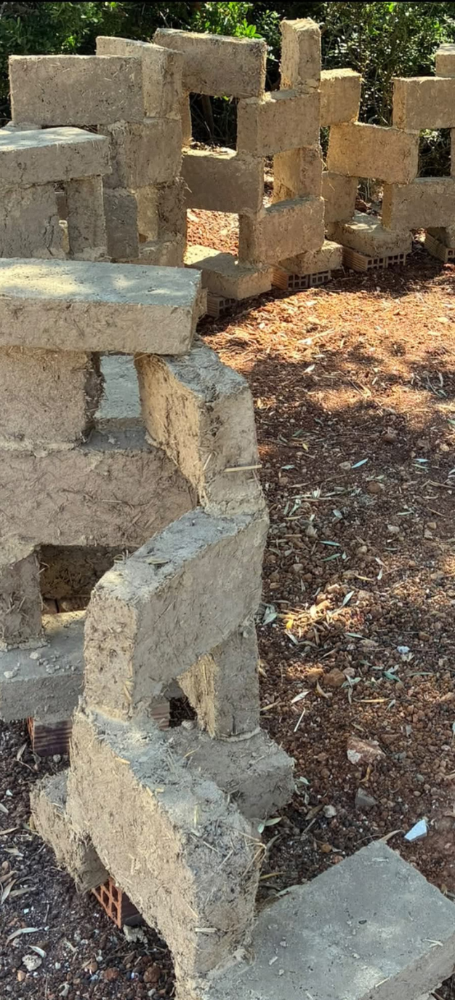
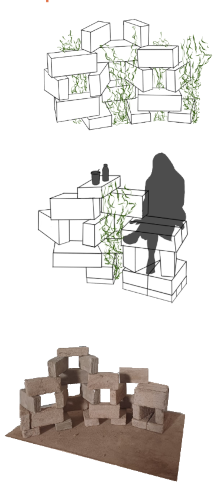
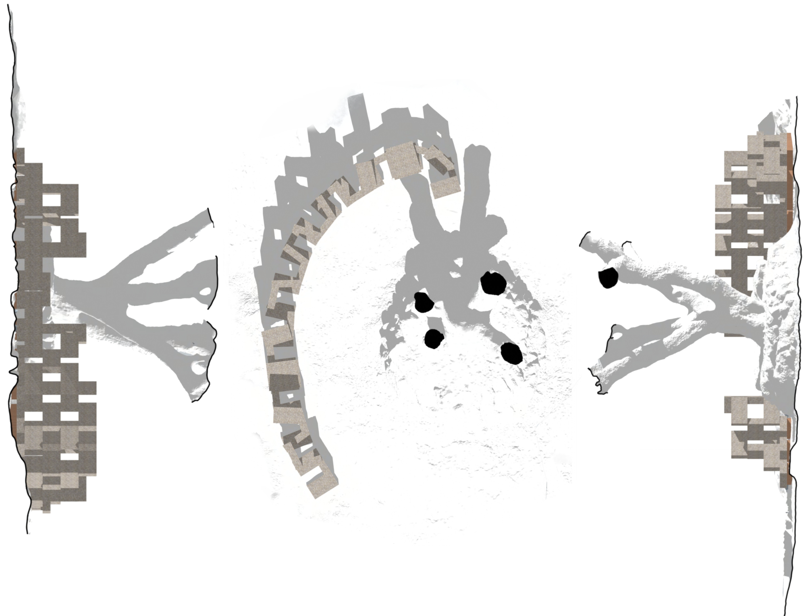
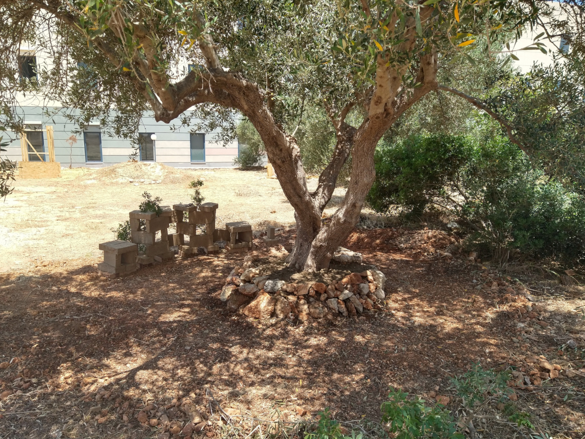
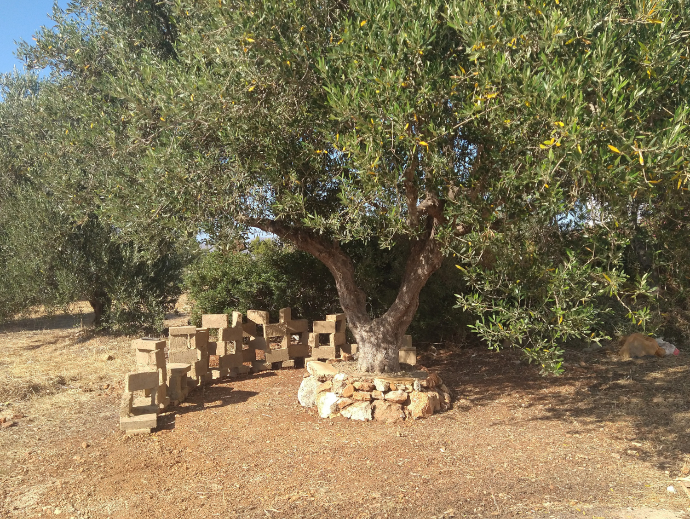

For 5th and last year in architecture I got into Erasmus Mobility, going to Chaniá, Crete, Greece. For the assignment of constructions with natural materials (Ειδικές κατασκευές με φυσικά υλικά), a small and quite challenging bench was planned and made entirelly out of adobe bricks, hugging an olive tree, with the intent of understanding how the material works, My role in this project was construction of stone wall/bench close to the tree and part of the earthen bench, the solar and usable orientation, modeling and 3d scans. Earthen Bench built with local dirt and straw using adobe and earthen binders made in situ for the assignment of Construction with Natural Materials at TUC. Near building K4 in Technical University of Crete, Chaniá, Greece. Scanned with Polycam June 14 2025, circa 4 pm Greece time.
Model created for presentation🧷

Projections

Morning shot, early June, when the bricks and the area around the olive tree is under shade.

Afternoon shot, early June, when the bricks are being heated for late afternoon/night use.